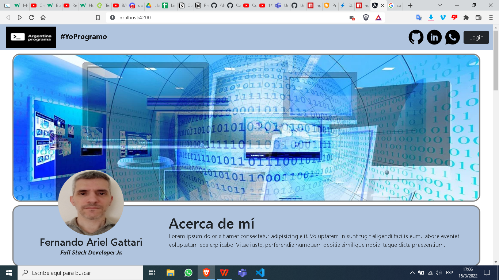

<div class="card">    
    <div class="container-fluid">
        <div class="row">
            <div class="proyectos col-12 col-sm-12 col-md-12 col-lg-4 col-xl-4 col-xxl-4">
                <h1>Proyectos</h1>     
            </div>            
            <div class="proyectos col-12 col-sm-12 col-md-12 col-lg-8 col-xl-8 col-xxl-8">
            </div>          
        </div>
        
        
        
        
        <div class="row">
            <div class="proyectos col-12 col-sm-12 col-md-12 col-lg-4 col-xl-4 col-xxl-4">
                     
            </div>
            
            <div class="nombre_del_proyecto col-12 col-sm-12 col-md-12 col-lg-8 col-xl-8 col-xxl-8">
                <div>                                                        
                    <h3>Portfolio web</h3>
                    <p>may 2022</p>
                    <p>Desarrollo de una aplicación web full stack, que muestra: datos personales, estudios cursados, experiencia laboral, conocimiento de las 
                        tecnologías y lo que se desee agregar. Esta aplicación debe ser de arquitectura distribuida y contener un 
                        diseño de interface (front end) que muestre la información, una base de datos que almacene los datos antes mencionados y debe contar con las 
                        APIs necesarias para proveer a través de internet la información (back end). La idea es que, además de servir para aplicar lo aprendido y ser evaluado, 
                        se pueda publicar el portfolio y usarlo como carta de presentación en el mercado laboral.</p>
                    <p><a href="https://argentinaprograma.inti.gob.ar/" target="_blank">Link a Portfolio web</a></p>   
                    </div>            
                </div>          
            </div>
            
            <br>
            
            
            
        </div>
    </div>
    
    